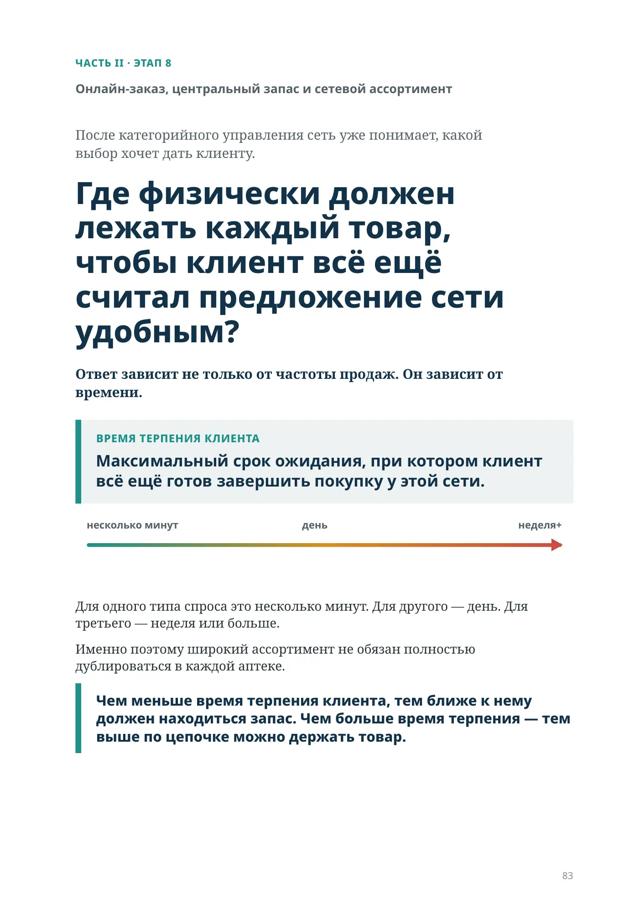
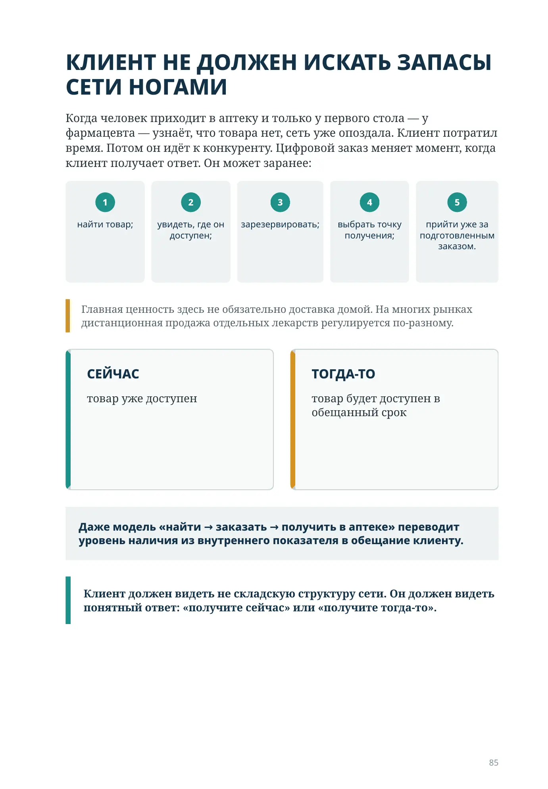
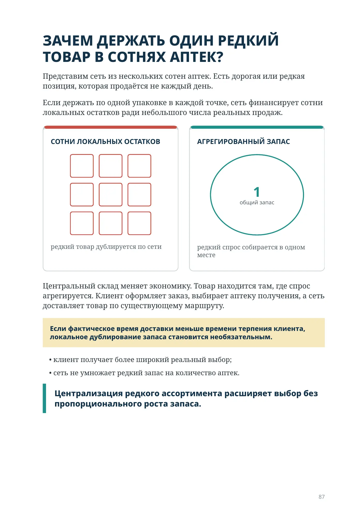
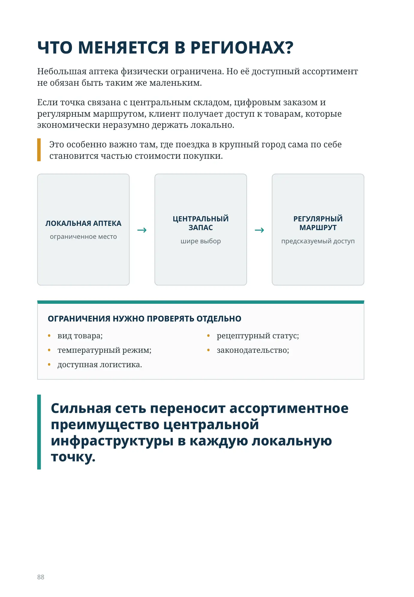
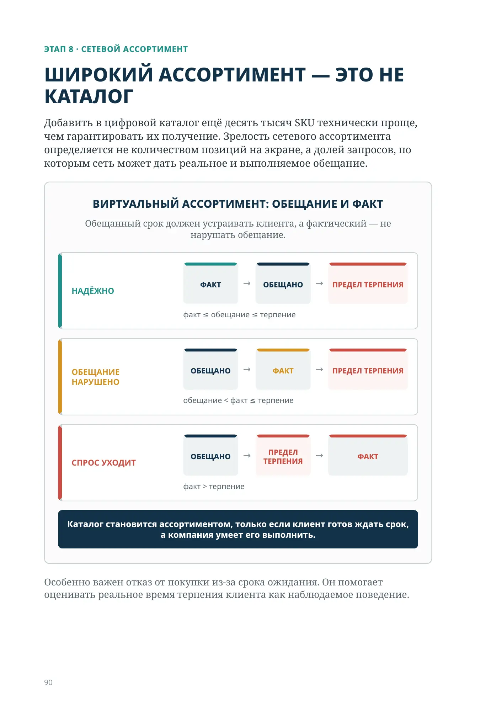
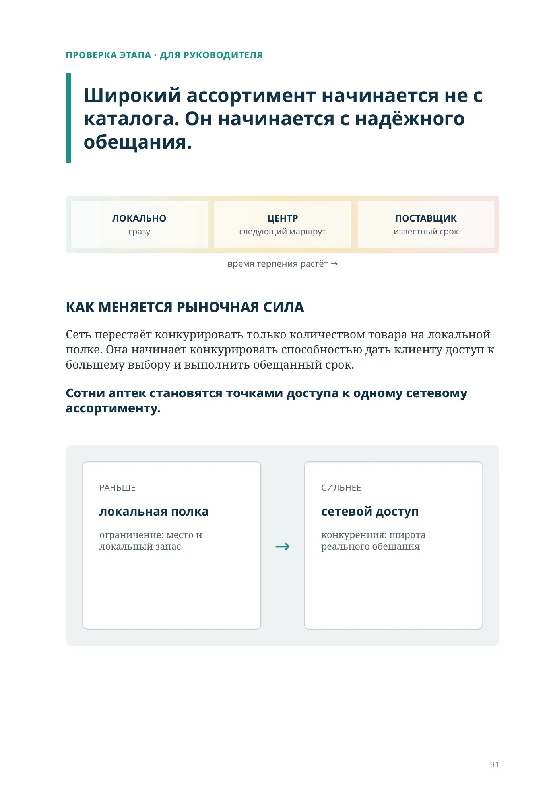
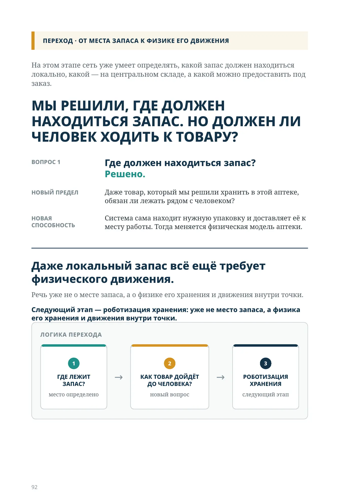
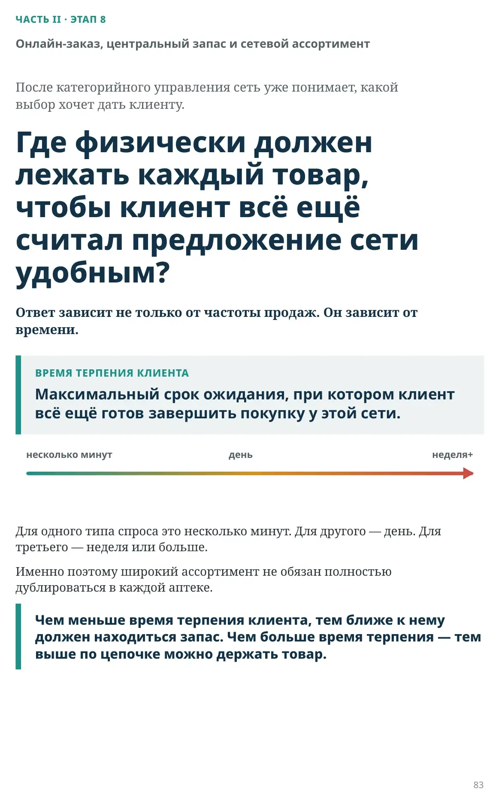

Должен ли весь ассортимент физически лежать в каждой аптеке?

ЧАСТЬ II · ЭТАП 8
Онлайн-заказ, центральный запас и сетевой ассортимент
После категорийного управления сеть уже понимает, какой выбор хочет дать клиенту.
Где физически должен лежать каждый товар, чтобы клиент всё ещё считал предложение сети удобным?
Ответ зависит не только от частоты продаж. Он зависит от времени.
ВРЕМЯ ТЕРПЕНИЯ КЛИЕНТА
Максимальный срок ожидания, при котором клиент всё ещё готов завершить покупку у этой сети.
Для одного типа спроса это несколько минут. Для другого — день. Для третьего — неделя или больше.
Именно поэтому широкий ассортимент не обязан полностью дублироваться в каждой аптеке.
Чем меньше время терпения клиента, тем ближе к нему должен находиться запас. Чем больше время терпения — тем выше по цепочке можно держать товар.
ЭТАП 8 · СЕТЕВОЙ АССОРТИМЕНТ
Время терпения клиента определяет место запаса
Не каждый товар нужен немедленно. Для части спроса ожидание почти равно нулю. Для другого спроса ожидание приемлемо, если срок понятен и выполняется.
Больше допустимого ожидания — больше допустимого расстояния до запаса.
сейчас → позже
ожидание клиента → обещанный срок → место запаса
Чем дольше клиент готов ждать, тем выше по цепочке можно держать запас — в аптеке, на центральном складе или у поставщика. Так локальный запас сокращается, а ассортимент не сужается.
КЛИЕНТ НЕ ДОЛЖЕН ИСКАТЬ ЗАПАСЫ СЕТИ НОГАМИ
Когда человек приходит в аптеку и только у первого стола — у фармацевта — узнаёт, что товара нет, сеть уже опоздала. Клиент потратил время. Потом он идёт к конкуренту. Цифровой заказ меняет момент, когда клиент получает ответ. Он может заранее:
- найти товар;
- увидеть, где он доступен;
- зарезервировать;
- выбрать точку получения;
- прийти уже за подготовленным заказом.
Главная ценность здесь не обязательно доставка домой. На многих рынках дистанционная продажа отдельных лекарств регулируется по-разному.
Даже модель «найти → заказать → получить в аптеке» переводит уровень наличия из внутреннего показателя в обещание клиенту.
ПОЛКА ОСТАЁТСЯ ЛОКАЛЬНОЙ. АССОРТИМЕНТ СТАНОВИТСЯ СЕТЕВЫМ
В каждой аптеке остаётся локальный базовый ассортимент — товары, которые нужны часто, быстро и именно в этой локации. Но доступный клиенту выбор может быть значительно шире.
Через цифровой заказ клиент видит сетевой ассортимент, выбирает товар и точку получения; сеть выбирает источник запаса.
АПТЕКА — ЧАСТЫЙ СПРОС, СРАЗУ
ЦЕНТРАЛЬНЫЙ СКЛАД — РЕДКИЙ СПРОС, 1–2 ДНЯ
ПОСТАВЩИК — СВЕРХРЕДКИЕ SKU, ПОД ЗАКАЗ
МАЛЕНЬКАЯ АПТЕКА ≠ МАЛЕНЬКИЙ ВЫБОР
Локальная аптека закрывает спрос с коротким временем терпения. Центральный склад — редкий и медленный спрос. Поставщик может закрывать сверхредкий спрос, если срок предсказуем и приемлем для клиента.
ЗАЧЕМ ДЕРЖАТЬ ОДИН РЕДКИЙ ТОВАР В СОТНЯХ АПТЕК?
Представим сеть из нескольких сотен аптек. Есть дорогая или редкая позиция, которая продаётся не каждый день.
Если держать по одной упаковке в каждой точке, сеть финансирует сотни локальных остатков ради небольшого числа реальных продаж.
Центральный склад меняет экономику. Товар находится там, где спрос агрегируется. Клиент оформляет заказ, выбирает аптеку получения, а сеть доставляет товар по существующему маршруту.
Если фактическое время доставки меньше времени терпения клиента, локальное дублирование запаса становится необязательным.
- клиент получает более широкий реальный выбор;
- сеть не умножает редкий запас на количество аптек.
Централизация редкого ассортимента расширяет выбор без пропорционального роста запаса.
ЧТО МЕНЯЕТСЯ В РЕГИОНАХ?
Небольшая аптека физически ограничена. Но её доступный ассортимент не обязан быть таким же маленьким.
Если точка связана с центральным складом, цифровым заказом и регулярным маршрутом, клиент получает доступ к товарам, которые экономически неразумно держать локально.
Это особенно важно там, где поездка в крупный город сама по себе становится частью стоимости покупки.
ОГРАНИЧЕНИЯ НУЖНО ПРОВЕРЯТЬ ОТДЕЛЬНО
- вид товара;
- рецептурный статус;
- температурный режим;
- законодательство;
- доступная логистика.
Сильная сеть переносит ассортиментное преимущество центральной инфраструктуры в каждую локальную точку.
А ЕСЛИ ТОВАРА НЕТ ДАЖЕ НА ЦЕНТРАЛЬНОМ СКЛАДЕ?
Иногда лучший способ управлять сверхредким товаром — не держать его в собственном запасе. Но только при одном условии:
Сеть должна уметь надёжно обещать срок.
Для этого нужно знать, кто поставит товар, за сколько времени, с какой вероятностью срок будет выполнен и какие ограничения действуют.
Тогда клиент видит не просто «нет в наличии», а: «Доступно под заказ. Ожидаемый срок получения — такой-то».
Физически товар сегодня может принадлежать поставщику. Но сеть обладает другой способностью — надёжно организовать доступ.
Ассортимент определяется не только тем, что лежит на складе. Он определяется тем, что сеть способна надёжно предоставить клиенту в обещанный срок.
| В АПТЕКЕ | сразу | частый спрос, ждать почти не готов |
|---|---|---|
| ЦЕНТРАЛЬНЫЙ СКЛАД | со следующим маршрутом | редкий спрос, готов подождать день-два |
| ПОД ЗАКАЗ | в известный, более длинный срок | сверхредкий спрос, готов ждать дольше |
Главная формула: обещанный срок должен укладываться во время терпения клиента — и сеть должна уметь этот срок выполнять.
ЭТАП 8 · СЕТЕВОЙ АССОРТИМЕНТ
ШИРОКИЙ АССОРТИМЕНТ — ЭТО НЕ КАТАЛОГ
Добавить в цифровой каталог ещё десять тысяч SKU технически проще, чем гарантировать их получение. Зрелость сетевого ассортимента определяется не количеством позиций на экране, а долей запросов, по которым сеть может дать реальное и выполняемое обещание.
Обещанный срок должен устраивать клиента, а фактический — не нарушать обещание.
Каталог становится ассортиментом, только если клиент готов ждать срок, а компания умеет его выполнить.
Особенно важен отказ от покупки из-за срока ожидания. Он помогает оценивать реальное время терпения клиента как наблюдаемое поведение.
ПРОВЕРКА ЭТАПА · ДЛЯ РУКОВОДИТЕЛЯ
Широкий ассортимент начинается не с каталога. Он начинается с надёжного обещания.
время терпения растёт →
КАК МЕНЯЕТСЯ РЫНОЧНАЯ СИЛА
Сеть перестаёт конкурировать только количеством товара на локальной полке. Она начинает конкурировать способностью дать клиенту доступ к большему выбору и выполнить обещанный срок.
Сотни аптек становятся точками доступа к одному сетевому ассортименту.
На этом этапе сеть уже умеет определять, какой запас должен находиться локально, какой — на центральном складе, а какой можно предоставить под заказ.
МЫ РЕШИЛИ, ГДЕ ДОЛЖЕН НАХОДИТЬСЯ ЗАПАС. НО ДОЛЖЕН ЛИ ЧЕЛОВЕК ХОДИТЬ К ТОВАРУ?
ВОПРОС 1
Где должен находиться запас? Решено.
НОВЫЙ ПРЕДЕЛ
Даже товар, который мы решили хранить в этой аптеке, обязан ли лежать рядом с человеком?
НОВАЯ СПОСОБНОСТЬ
Система сама находит нужную упаковку и доставляет её к месту работы. Тогда меняется физическая модель аптеки.
Даже локальный запас всё ещё требует физического движения.
Речь уже не о месте запаса, а о физике его хранения и движения внутри точки.